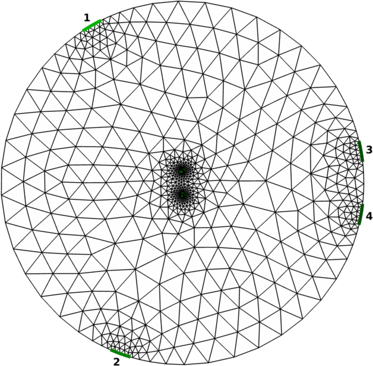
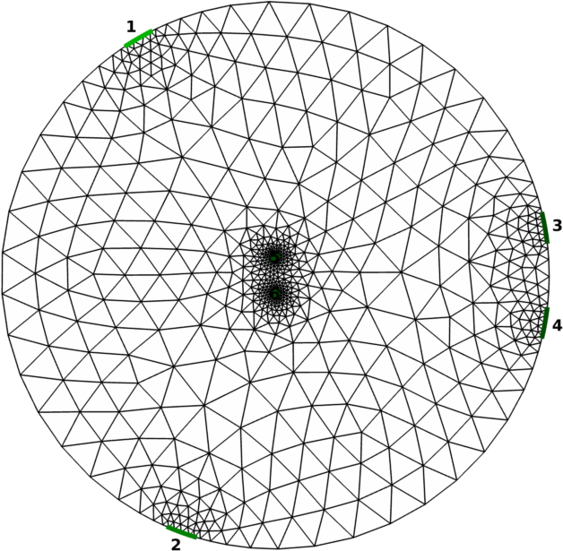
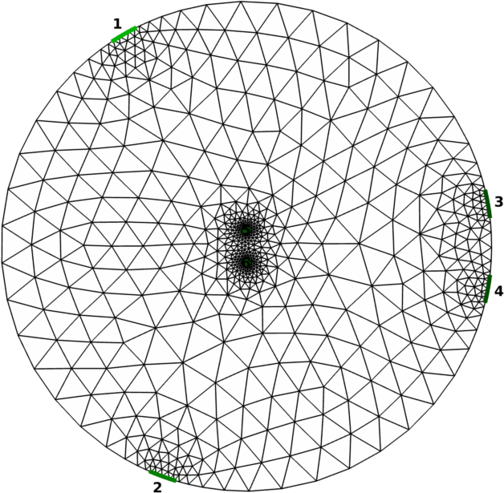

Figure 1: three of six models, stimulus electrodes #1 and #2, measurement electrodes #3 and #4, interior electrodes #5 and #6;
40% diametre (Left), 13.2% diametre (Middle), 6.4% diametre (Right) interior electrode separation
The following are implementations used in the model reduction examples from
First we build a circular 2D Netgen model. There are two stimulus electrodes (#1 and #2) and two measurement electrodes (#3 and #4) with locations set by selecting angle in degrees. In addition, we have added two interior electrodes (#5 and #6) with a particular separation (Figure 1).
[% PROCESS "model_reduction01.m" %]

The model is then reduced to a fully-connected "mesh" network of resistors (Figure 2). Some mesh networks may be reduced to a "star" configuration, reducing the resistors and wiring criss-cross in a physical implementation, but we do not address that conversion here.
[% PROCESS "model_reduction02.m" %]The fully-connected mesh network is illustrated with the following code, by stripping away the FEM lines and drawing connected lines between number electrodes.
[% PROCESS "model_reduction02_fig.m" %]
The best standard resistors for our particular mesh can then be found by minimizing the fitting error
[% PROCESS "model_reduction03.m" %]which, for the first model (40% diametre interior electrode separation) gives a resistor configuration in the form of an upper triangular matrix
[% PROCESS "model_reduction03.txt" %]where the resistor values are given by the off-diagonal values between each row (electrode n) and column (electrode m) with resistor selection error minimized (Figure 3).
Commonly available resistors are defined by EIA standards
[% PROCESS "model_reduction03_stdres.m" %]which is used to calculate the misfit between ideal resistor values and available resistor values
[% PROCESS "model_reduction03_calc_err.m" %]
Last Modified: $Date$ by $Author$